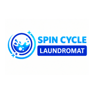

Find what is lacking → rank the opportunity → create the fix → measure real revenue
A high score means the funnel is ready to scale. A low score tells you what to fix before spending more.
CALCULATING| Business | Category | Contact | lb/wk | Status | Next Follow-Up | Est. Monthly Revenue* |
|---|
Customers with no second order in 21–30 days should receive a targeted comeback offer, not a generic ad.
After a successful order: request a review, then offer Give $10 / Get $10 or another owner-approved referral value.
All paid/organic creative remains Preview → Approve → Publish. Pricing and budget stay owner-controlled.
If Google, website audit, or publishing APIs are unavailable, show “data unavailable” and keep saved owner data intact.
Commercial leads and funnel inputs can be exported. Future publishing connections should log who changed budget, offer, creative and status.